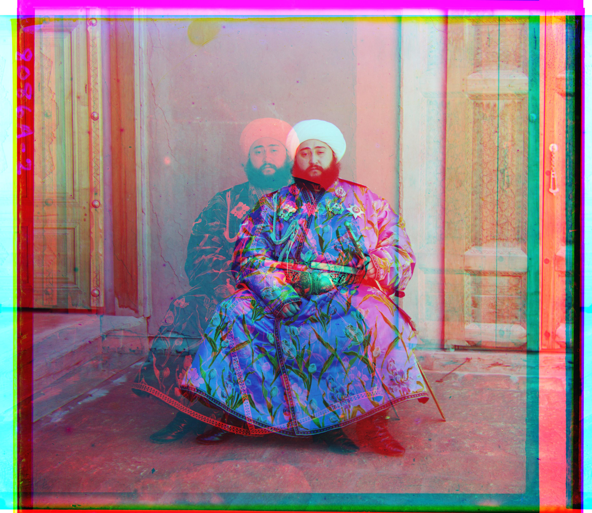

Sergei Mikhailovich Prokudin-Gorskii (1863-1944) was a man well ahead of his time. Convinced, as early as 1907, that color photography was the wave of the future, he won Tzar's special permission to travel across the vast Russian Empire and take color photographs of everything he saw including the only color portrait of Leo Tolstoy. And he really photographed everything: people, buildings, landscapes, railroads, bridges... thousands of color pictures! His idea was simple: record three exposures of every scene onto a glass plate using a red, a green, and a blue filter. Never mind that there was no way to print color photographs until much later -- he envisioned special projectors to be installed in "multimedia" classrooms all across Russia where the children would be able to learn about their vast country. Alas, his plans never materialized: he left Russia in 1918, right after the revolution, never to return again. Luckily, his RGB glass plate negatives, capturing the last years of the Russian Empire, survived and were purchased in 1948 by the Library of Congress. The LoC has recently digitized the negatives and made them available on-line.
The goal of this assignment is to take the digitized Prokudin-Gorskii glass plate images and, using image processing techniques, automatically produce a color image with as few visual artifacts as possible. This consists of extracting the three color channel images, placing them on top of each other, and aligning them so that they form a single RGB color image.
With small enough images, I was able to align the green and red channels of the input image to the blue channel primarily using a basic algorithm. I did preprocessing of cropping the image (1/10 of the pixels along each edge were cropped away) in order to eliminate noise around the edges, then passed this cropped image into the basic algorithm (This technique of cropping helped/didn't hurt all images except for emir; emir is shown uncropped). The basic algorithm is relatively simple. It takes in two images and outputs an offset. It translates a channel across different displacements in the range [-15,15] along both the x and y axes. At each displacement, it calculates the sum of squared differences (SSD) which is simply sum((image1-image2)^2). The displacement that corresponds to the minimum SSD is the optimal one. The three channels are then stacked at their optimal offsets and this results in the color image!
While this technique works well with small images, much larger images often have an offset between channels greater than 15 pixels. In these circumstances, brute forcing is not the best option. Instead, the pyramid algorithm is used to calculate the offsets for the red and green channels. The pyramid algorithm recursively resizes the image by a scaling factor (in this case .5). Once a recursion deepens to the point that the image is a certain size (128^2 pixels), the basic algorithm is used to determine the displacement (this time only in the range [5,5])for this reduced size image. As the pyramid algorithm recurses back to the top layer, it scales the displacement vector from the previous (more deep) layer by 1/scaling_factor to account for the larger image, then uses that displacement as a center point for the basic algorithm. This continues until the full size image is reached and a displacement vector for it is returned.
Following are the image results. The first column is the raw input pictures containing the three color channel images. The second column has the color image after alignment using the cropping technique (except for emir) and minimizing sum of squared distances. The displacement vectors for the red and green filters are included beneath these images.
| cathedral | |
|---|---|
|
|
| Red:(3, 12) Green:(2, 5) | |
| emir | |
|
|
| Red:(17, 107) Green:(7, -3) | |
| icon | |
| Red:(23, 89) Green:(17, 41) | |
| lady | |
| Red:(11, 112) Green:(9, 51) | |
| melons | |
| Red:(13, 178) Green:(10, 81) | |
| monastery | |
|
|
| Red:(2, 3) Green:(2, -3) | |
| nativity | |
| Red:(0, 7) Green:(1, 3) | |
| onion_church | |
|
|
| Red:(36, 108) Green:(26, 51) | |
| three_generations | |
|
|
| Red:(11, 112) Green:(14, 53) | |
| tobolsk | |
|
|
| Red:(3, 6) Green:(3, 3) | |
| train | |
| Red:(32, 87) Green:(5, 42) | |
| village | |
|
|
| Red:(22, 137) Green:(12, 64) | |
| workshop | |
| Red:(-12, 105) Green:(0, 53) | |
| courtyard | |
|---|---|
 |
|
| Red:(1, 8) Green:(1, 3) | |
| floodgates | |
 |
|
| Red:(-20, 87) Green:(-11, 33) | |
| pole | |
 |
|
| Red:(-6, 11) Green:(-2, 5) | |
Overall, the alignment seemed to work really well for all of the images except for emir. Neither the cropped version nor the uncropped version produced a good output for that particular photo. I beleive this is because using SSD directly on the color channels is not the best solution. That is true because all of the color channels are not expected to have similar values in each pixel. In order to improve this, I implemented edge detection as a second pre-processing technique as shown in the Bells And Whistles section below.
In order to improve the image quality and perfect alignment, I implemented the feature of edge detection. To do edge detection, a sobel filter was simply used as an additional pre-processing step. Each of the color channels were passed through a sobel filter, resulting in a channel that highlights the edges. These edge-detection channels are then cropped and used in the basic or pyramid algorithms to generate the offset vectors. These offset vectors were then used with the original channels to align the color image.
For most of the images, minimizing the SSD on the cropped channels was sufficient; the added preprocessing of edge detection using the sobel filter barely affected the offset vectors (if at all). However, it made a big difference on the emir image. Below you can see emir with three different sets of offset vectors. The first column shows emir generated from simple alignment with no preprocessing. The second column shows emir generated with the preprocessing of cropping away the edges. The final column shows emir with proprocessing of both edge detection using the sobel filter and cropping. The displacement vectors for all three can be found below the images.
| emir | ||
|---|---|---|
|
 |  |
| Red:(17, 107) Green:(7, -3) | Red:(-249, 95) Green:(24, 49) | Red:(40, 107) Green:(24, 49) |